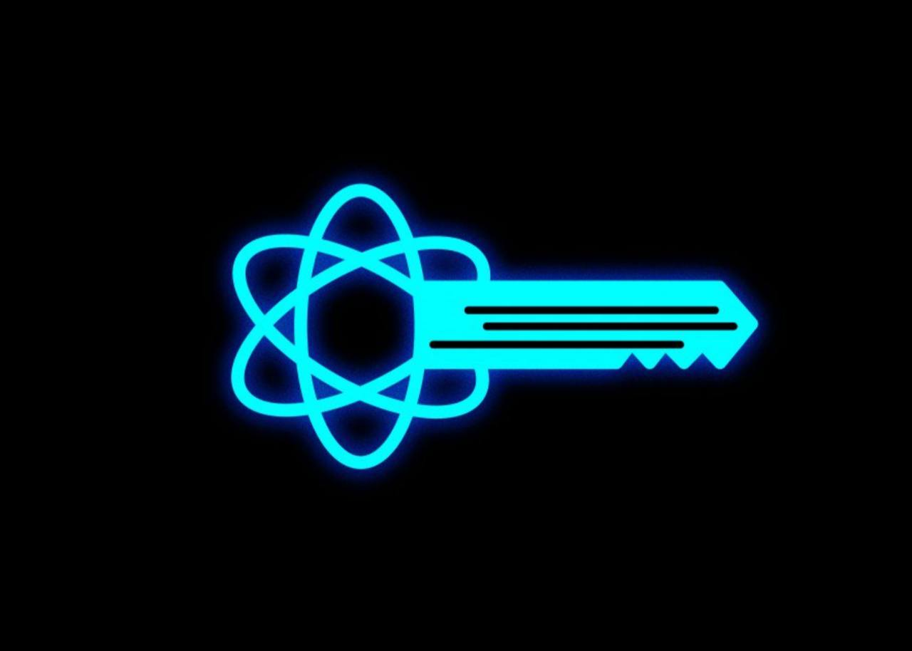
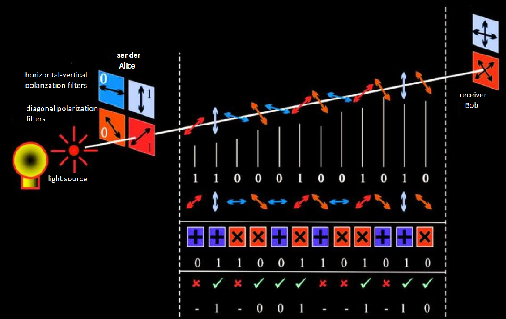

Present and Future of the Quantum Cryptography
DEG0009
Co je kvantová kryptografie?
Kvantová kryptografie je metoda ochrany komunikace založená na principech kvantové fyziky. Na rozdíl od tradiční kryptografie, která používá matematické metody k zajištění utajení informací, se kvantová kryptografie zaměřuje na fyziku a zabývá se případy, kdy jsou informace přenášeny pomocí objektů kvantové mechaniky.
Jak to všechno začalo?
Historie kvantové kryptografie nezačala komunikačními technologiemi, ale pokusem vyřešit úplně jiný úkol — vytvořit peníze, které nelze předstírat.
Stephen Wiesner z Columbia University v roce 1983 navrhl vytvoření kvantových bankovek státního vzorku, které nelze kopírovat. Pravděpodobnost výroby repliky originálu chráněného kvantovými technologiemi je nulová.
Podstatou technologie je, že každá bankovka má pasti s fotony, z nichž každá je určitým způsobem polarizována na dvou různých základech. Jeden základ poskytoval "křížovou" polarizaci: to znamená, že foton mohl být polarizován v úhlu 0 nebo 90 stupňů od určité vertikální a druhý diagonální, to znamená s úhly 45 a 135 stupňů.
Aby bylo možné bankovku zkopírovat, musí padělatel měřit polarizaci fotonů, ale neví, v jakém základu je každý polarizován. Zločinec si může vybrat základy náhodně a pak má nějaké šance na úspěch, i když velmi malé. Pokud však vytvoříte fotonické pasti, stanou se zanedbatelnými. To znamená-zvýšit počet fotonů na každé bankovce.
Byl to skvělý nápad, ale bohužel technicky nerealizovatelný: pohodlné a hromadně použitelné fotonové pasti vhodné pro umístění na peníze nebyly dosud vytvořeny.
Co je kvantová síť a kdy se objevily první technologie a protokoly?
Wiesner také navrhl, že podobný mechanismus lze použít k vytvoření důvěrných komunikačních kanálů. Již rok po vydání jeho článku vyvinuli vědci Gilles Brassard a Charles Bennett první protokol pro kvantovou komunikaci, který pojmenovali podle prvních písmen svých příjmení a roku výroby technologie — BB84. Právě tento protokol je široce používán v moderních kvantových komunikačních sítích.
Bennett a Brassard navrhli kódování dat v kvantových stavech jednotlivých fotonů, například v jejich polarizaci. Stejně jako u jiných kvantových objektů samotná skutečnost měření nutně ovlivňuje stav objektu, proto pokud se někdo třetí pokusí "odposlouchávat" přenos fotonů-to znamená měřit stavy fotonů, které si vyměňujeme, určitě si toho všimneme, protože se změní stavy fotonů. Teoreticky je proto v zásadě nemožné diskrétně se připojit ke kvantovému datovému kanálu-neumožňují základní zákony kvantové mechaniky (v praxi má tato technologie také určité zranitelnosti).
Protokol BB84
BB84 je nejstarší protokol kvantové kryptografie. Protokol funguje následovně. Jeden z partnerů (tradičně nazývaný Alice) vysílá další (Bob) fotony polarizované v jednom ze dvou, neortogonálních, základech: obdélníkový nebo diagonální. Bob je přijímá a měří polarizaci výběrem základů pro měření náhodně a zaznamenává výsledky měření a báze. On a Alice si poté vyměňují informace o použitých základnách (ale ne o výsledcích měření) přes otevřený kanál a data získaná z neshodných základen jsou resetována. Zůstávají pouze hodnoty měřené v odpovídajících základech (v technologii kvantové distribuce klíčů se tomu říká "prosévání klíče").
Omezení kvantové komunikace
Hlavními omezeními kvantové kryptografie jsou rychlost distribuce klíčů a vzdálenost mezi vysílačem a přijímačem. Tento problém se snaží vyřešit moderní fyzici, kteří přicházejí s novými protokoly, novými optickými obvody, novými metodami přípravy měření kvantových stavů.
Je také nutné neustále snižovat počet chyb. Kritická míra chyb je 11%. Čím větší je vzdálenost, kterou je kvantový klíč přenášen, tím více klesá poměr signál — šum. Signál mizí v optickém vlákně a šum zůstává. Kvůli těmto světlicím ve skutečném vlákně není možné přenášet informace stovky kilometrů.
Oblasti použití kvantové kryptografie. Kvantový blockchain

Kvantové šifrování lze použít nejen k ochraně přenosu dat, ale také k jejich distribuovanému ukládání, k ochraně blockchainu. S příchodem kvantových počítačů bude blockchainový systém nestabilní: Blockchain je velmi zranitelný vůči útokům pomocí kvantového počítače. Kvantový počítač vám umožní spočítat tajný kód podle čísla peněženky, pomocí kterého bude možné tuto peněženku zlikvidovat.
Skupina vědců RCC navrhla použití kvantových klíčů k ochraně blockchainových systémů. Dnes v bankovních datových centrech existují šifry, které používají symetrické klíče, které jsou přenášeny i ručně. K nim jsou navíc nainstalovány systémy kvantové distribuce klíčů a klíče se mění nejen jednou za několik měsíců, ale jednou za několik sekund. Na jedné straně je tento mechanismus horší než jednorázový notebook a na druhé straně poskytuje obrovskou výhodu oproti tomu, co je nyní.
Kvantovou kryptografii lze také použít pro distribuované ukládání dat. Je možné distribuovat informace do více datových center a neustále je míchat pomocí kvantově chráněných kanálů. Takže i když někdo získá přístup k části těchto datových center, nedostane všechny informace. To bude fungovat, pokud bude část datových center zničena: legitimní uživatel bude moci autentizovaným způsobem kontaktovat zbývající datová centra a obnovit všechny užitečné informace.
Kvantové klíče budou také užitečné pro zabezpečení autentizačních úkolů, což je v podstatě ověření "něčí — cizí". V tomto případě vám kombinace technologie hash funkcí a jednorázového poznámkového bloku umožňuje zkontrolovat například data pro systém internetu věcí od řídícího centra nebo od někoho jiného. To je velmi důležité, protože za pět až sedm let může být hrozba kvantového počítače skutečná. Zároveň bude v ulicích obrovské množství bezpilotních automobilů, které jsou zatím jednotky a budou miliony. A všichni budou muset přijímat řídicí signály a důvěryhodně aktualizovat firmware bez interakce s osobou po celé měsíce. To znamená, že budou muset získat kvantové klíče a poté je použít v procesu pohybu.
SHORŮV ALGORITMUS
První kvantový algoritmus, který vyvolal velkou vlnu zájmu o kvantové výpočty. Byl zveřejněn Peterem Shorem (MIT) v roce 1994. Byl zajímavý tím, že ukázal praktické využití kvantových výpočtů. Jádrem Shorova algoritmu je diskrétní Fourierova transformace, která umí zjistit, zda nějaká diskrétní funkce je periodická a jakou má periodu. Pro nalezení periody diskrétní funkce se právě využívá masivních paralelních výpočtových vlastností kvantového systému. Tím byla nastíněna cesta, jak pokořit princip asymetrického šifrovacího systému, který je založen na principu geometrického nárůstu času potřebného k rozluštění šifry v závislosti na délce klíče. Tedy roste - li délka klíče lineárně, čas potřebný k rozbití šifry hrubou silou (to znamená testováním všech možností) narůstá geometricky. K takto obtížným algoritmům se řadí právě RSA, který využívá triviální výpočetní operace násobení dvou čísel a velmi obtížné inverzní operace - faktorizace, která umožní získat původní činitele, z něhož výsledek vznikl. Obecně sice nebyl podán důkaz, že existuje nekvantový algoritmus, který tuto úlohu řeší, což znamená, že takový algoritmus může existovat, ale zatím stále odolává nalezení.[6] Ovšem Shorův algoritmus ukazuje cestu, jak faktorizaci provést v tzv. polynomiálním čase a to za pomocí výše zmíněného kvantového výpočetního systému. Cílem tohoto článku není detailní popis kvantového principu algoritmu, ale popis jednotlivých sekvencí s možností simulace na klasickém výpočetním systému. Faktorizaci malých čísel lze efektivně provádět Euklidovým algoritmem Význam Shorova algoritmu nastupuje v okamžiku velkých čísel, kde již klasický Euklidův algoritmus naprosto selhává. Nutno upozornit, že má statistický charakter, což znamená, že neexistuje přesná kuchařka při zadání vstupních hodnot pro faktorizaci. To znamená, že řada kombinací čísel potřebných k výpočtu nemusí vždy vést ke správnému výsledku. Ale metoda pokusů a omylů (nalezení periody posloupnosti) dává velkou pravděpodobnost získání relevantního výsledku.
Perspektivy kvantové kryptografie. Satelitní kvantová kryptografie
Čína již vybudovala národní síť kvantové kryptografie, která spojuje Peking, Šanghaj, Hefei a Jinan. Rusko má také projekt plánu kvantové komunikace, který dohlíží na ruské železnice. Kromě toho ruští vědci ve spolupráci s čínskými kolegy pracují na satelitní kvantové kryptografii.
Existuje systém připojený k dalekohledu doprovázejícímu satelit Mo-Tzu umístěný na oběžné dráze v roce 2016. Tento systém je schopen přijímat kvantové stavy z nízké oběžné dráhy. Atmosféra vertikálně od satelitu k zemi má přibližně stejnou ztrátu jako 10 kilometrů na hladině moře. To znamená, že v Dobrý den můžete přenášet kvantové klíče "satelit-Země".
V takové perspektivě od serverových řešení, která již lze zakoupit, přecházíme na satelitní řešení. Na horizontu 8-10 let již existuje vyhlídka, že se tato technologie dostane ke koncovým uživatelům. Pak například získáním služby "Státní služby" si můžeme stáhnout a získat kvantové klíče z jakéhokoli bankomatu do vlastního telefonu a důvěryhodně využívat státní nebo bankovní služby.
Hlavní technologickou otázkou nyní je, zda se lidstvu v dohledné budoucnosti podaří vyrobit dobrý kvantový opakovač, ne nekonečně drahý a nekonečně složitý, ale ten, který lze vyrobit a postavit. Existuje důvod věřit, že to bude možné na horizontu 8-10 let.
Kvantové počítače. Princip funkce
Rozsáhlé projekty probíhají v USA, Evropě, Číně a Rusku. Největší zájem je o kvantový počítač — do závodu o jeho vybudování se zapojily nejen univerzity, ale také velké korporace, mezi nimiž jsou Google, IBM, Microsoft a Intel. Předpokládá se, že kvantové počítače mohou revoluci v celé řadě oblastí, jako je ochrana informací, umělá inteligence a modelování nových materiálů.
Kvantový počítač je oproti klasickému počítači, kde jsou data reprezentována bity, přičemž každý bit je buď 0, nebo 1, tak v kvantovém počítači se používají qubity (kvantové bity), které mohou být nula, jedna, nebo i kombinace obou. Kvantový počítač vykonává výpočty na základě fenoménů známých z kvantové mechaniky jako superpozice či interference.
Výzkum kvantových počítačů započal na počátku 80. let dvacátého století, jedním z prvních proponentů byl známý fyzik Richard Feynman. Rychlý rozvoj teorie kvantových počítačů a algoritmů nastal v 90. letech dvacátého století po objevení Shorova algoritmu, jehož implementace na kvantovém počítači by prolomila většinu dnes používaných kryptosystémů. Sestrojení plně funkčního kvantového počítače je považováno za složitý technologický problém.
Za lídra kvantové rasy lze dnes považovat společnost Google, která předvedla kvantový počítač se 72 qubity. Základní technologie Google je stejná jako u IBM-supravodivé qubity. Tým vědců a vývojářů společnosti Google také publikoval řadu vědeckých článků popisujících přístupy k dosažení kvantové nadřazenosti. V blízké budoucnosti lze tedy očekávat, že společnost předvede kvantovou nadřazenost pomocí kvantového procesoru, který vyvinuli.
Jak můžeme pomocí kvantového počítače proniknout do struktury moderních šifrovacích systémů?
Kvantový počítač má dvě strany: tmavou a světlou. když hovořim o světlé straně-řešení téměř žádaných problémů, které nelze vyřešit pomocí klasických počítačů. Ale je tu také temná stránka: kvantový počítač mnohem lépe než klasický řeší problém faktorizace. Složitost tohoto úkolu je známá jako jeden ze základů pro zajištění odolnosti běžných kryptografických algoritmů veřejného klíče. Problém faktorizace je pro klasický počítač extrémně obtížný a na kvantovém lze efektivně vyřešit pomocí Shoreova algoritmu.
Například hackování 1024bitového klíče RSA bude trvat miliony let nepřetržitého výpočtu na klasických počítačích, zatímco na kvantovém počítači bude tento problém vyřešen za 10 hodin. Zatímco kvantové počítače neumožňují nic hacknout - koneckonců, pro kryptoanalýzu RSA potřebujete několik tisíc spravovaných qubitů. A zatímco potenciálně nebezpečný počítač ještě neexistuje, komunita již dnes uvažuje o ochraně před možnými problémy v budoucnu.
Mnoho lidí se zajímá o otázku, zda kvantový počítač poškodí blockchain. Ano, Je to možné. Prostřednictvím útoků na digitální podpisy a použitím kvantového Shoreova algoritmu a ovlivněním konsenzuálních algoritmů kvantovým groverovým algoritmem. Blockchainy však lze také chránit kvantovou distribucí klíčů nebo postkvantovou kryptografií.
Vyhodnocení a závěr
Stojíme na prahu velkých objevů a vynálezů s úplně jinou logikou a neuvěřitelnými možnostmi. Můžeme říci, že kvantová fyzika a zařízení na ní založená mění svět a formují vzhled moderní civilizace, ale zatím jsme jen na začátku její cesty